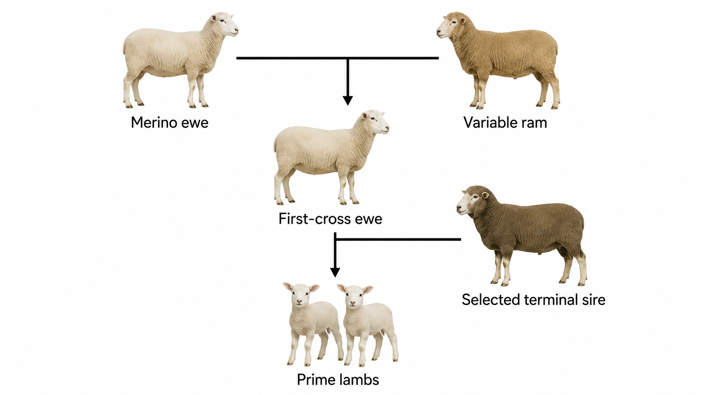

Task 3 drawing
Prime-lamb pedigree-reading guide
Read each cross from the two parents towards their offspring. The first cross produces a first-cross ewe. The second cross uses that ewe and a selected terminal sire to produce prime lambs.

Open largerHow to read the structure
- Identify the two parents in the first cross and trace their connector to the first-cross ewe.
- Use that first-cross ewe as the maternal parent in the second cross.
- Trace the selected terminal sire and first-cross ewe to the prime-lamb offspring.
- Justify each student-selected breed using relevant characteristics and its intended contribution.
Drawing source boundary: this guide shows the authorised relationship structure only. It does not supply a model breed answer, farm layout, dimensions, stocking rate, handling procedure, welfare control or local safety instruction.
Broader plan boundary
The exhaustive 2026 Drive inspection did not identify an authorised farm, paddock, plant-trial, yards or dairy plan. No generic substitute is published.
Teacher to confirm: any later plan, dimensions, quantities, trial layout, practical checkpoint or local procedure. A teacher-issued plan must retain its full technical content and a visible Open larger link.